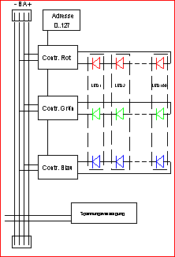

Hilfe für lumiTile
Hilfe zum LED-Wall-Editor
Hilfe zum KachelPlayer
Hilfe zu den lumiTile-LED
Kacheln
Hilfe zum
KachelController
Inhaltsverzeichnis
2 Hardware – LED-Kacheln und KachelController
3.2.1 Grafische Benutzeroberfläche
|
Copyright |
Copyright © Systemtechnik LEBER 2006 All Rights Reserved Weitergabe sowie
Vervielfältigung dieser Unterlage, Verwertung und Mitteilung ihres Inhaltes
ist nicht gestattet, soweit nicht ausdrücklich zugestanden. Zuwiderhandlungen
verpflichten zu Schadenersatz. Alle Rechte vorbehalten, insbesondere für den
Fall der Patenterteilung oder GM-Eintrag. |
|
Haftungs-Ausschluss |
Wir haben den Inhalt der
Druckschrift auf Übereinstimmung mit der beschriebenen Hardware geprüft.
Dennoch können Abweichungen nicht ausgeschlossen werden, so dass wir für die
vollständige Übereinstimmung keine Gewähr übernehmen. Die Angaben in dieser
Druckschrift werden jedoch regelmäßig überprüft und notwendige Korrekturen
sind in den nachfolgenden Auflagen enthalten. Für Verbesserungsvorschläge
sind wir dankbar. Technische Änderungen bleiben vorbehalten. |
|
Wichtig! |
Lesen Sie diese
Dokumentation genau durch. Bei Schäden, die durch Nichtbeachtung dieser
Dokumentation entstehen, erlischt der Garantieanspruch. Für Folgeschäden,
die daraus resultieren, übernehmen wir keine Haftung. |
|
Sicherheits-anweisungen |
Das Modul bzw. die
Baugruppe darf nur von Personen hantiert werden, die in der Lage sind,
Berührungsgefahren zu erkennen und Sicherheitsvorkehrungen zu treffen.
Berührungsgefahr besteht überall dort, wo Spannungen auftreten können, die
größer als 60VDC oder 42VAC sind. Nach der Norm EN 60204-1
(VDE 0113) sind zwingend einige Prüfungen vorgeschrieben, die Sie durchführen
und dokumentieren müssen, wenn die elektrischen Ausrüstungen vollständig mit
der Maschine verbunden sind. Die Prüfungen müssen nach VBG 4 von einer
Elektrofachkraft durchgeführt und dokumentiert werden. |
|
Bestimmungs-gemäße
Verwendung |
Das Modul bzw. die
Baugruppe ist ausschließlich für den Einsatz in industriellen Maschinen oder
Anlagen gedacht. Der Einsatz dieses Moduls bzw. dieser Baugruppe erfordert
zwingend ein Pre-Engineering, in welchem die gesetzlich vorgeschriebenen
Bestimmungen der jeweiligen Berufsgenossenschaften oder Verbände für die zu
erstellende Maschine oder Anlage erarbeitet werden und damit Grundlage für
alle technischen Lösungen werden. Bei Einsatz der Maschine
oder der Anlage im Ausland sind zusätzlich die dort geltenden Vorschriften zu
beachten. Wenn die Maschine oder die Anlage
in die USA oder nach Kanada exportiert werden soll, ist für unsere Module
oder Baugruppen vorher eine Erlaubnis einzuholen. Dieses Modul bzw. diese
Baugruppe ist kein Gerät im Sinne des Gerätesicherheitsgesetzes, sondern eine
Komponente, welche mit anderen Komponenten zu einer Anlage oder einer
Maschine zusammengeschaltet wird. Es gelten die jeweiligen gesetzlichen
Bestimmungen für den bestimmungsgemäßen Einsatz der Maschine oder der Anlage.
Die Planung, die Montage, die Inbetriebsetzung, die Prüfung, die Wartung und
die Demontage der Maschine oder Anlage darf nur durch eine Elektrofachkraft
oder entsprechend geschultes Personal durchgeführt werden. Entsprechende
Hinweise müssen in die Benutzerinformationen der jeweiligen Maschine oder
Anlage aufgenommen und deutlich gekennzeichnet werden. |
|
Bestimmungs-widrige
Verwendung |
Das Modul bzw. die
Baugruppe ist nicht für den kommerziellen Markt bzw. für den ‚Endanwender‘
gedacht. Der direkte oder indirekte Export in die USA oder Kanada ist ohne
ausdrückliche Genehmigung nicht gestattet. |
1 Einführung
Herzlichen
Dank für den Erwerb einer lumiTile LED-Kachel. Sie haben sich damit für ein
Qualitätsprodukt mit vielfältigen Funktionen entschieden. Wir wünschen Ihnen
viel Spaß. Für Anregungen stehen wir Ihnen jederzeit gerne zur Verfügung.
Systemtechnik
LEBER
Friedenstraße
33
D-90571
Schwaig
Germany
Fon:
+49-911-5406471
Fax:
+49-911-5406473
www.lumitile.de
Zum
optimalen Gestalten Ihrer Lichtanwendung gehören:
-
lumiTile LED-Kachel(n)
-
lumiTile KachelController
-
lumiTile Software LED-Wall-Editor für Win2000 und
WinXP
-
lumiTile Software KachelPlayer
Die
lumiTile LED-Kacheln werden über den KachelController angesteuert. Einfache
Lichtsequenzen können direkt über den KachelController programmiert werden.
Für
aufwändigere Lichtinstallationen steht Ihnen mit dem LED-Wall-Editor eine
einfach zu bedienende Software zur Erstellung von Lichtsequenzen zur Verfügung.
Die erstellten Programme werden mit Hilfe des KachelPlayers auf den LED-Kacheln
angezeigt oder auf den Controller heruntergeladen.
2 Hardware – LED-Kacheln und KachelController
2.1 LED-Kacheln
2.1.1
Übersicht
Bei der lumiTile handelt
es sich um eine LED-Kachel mit 100 RGB LEDs zur homogenen Beleuchtung von
Flächen. Bevorzugte Anwendungen finden sich im Messebau, Innenarchitektur,
Werbung/Leuchtreklame sowie im gehobenen Wohnbereich. Typischerweise wird die
lumiTile hinter einer Streuscheibe (nicht mitgeliefert, wir beraten Sie gerne)
eingebaut um eine homogene Beleuchtung zu gewährleisten. Je nach Abstand zur
Streuscheibe (min. 60mm) lässt sich eine Fläche von min. 245mm * 215mm
hinterleuchten. Jede der drei LED-Farben Rot, Grün und Blau kann separat in 256
Helligkeitsstufen eingestellt werden. Damit lassen sich bis zu 16,7 Millionen
Farben darstellen.
Bis zu 127 Kacheln lassen
sich mit einem Controller selektiv mit den drei Farbwerten ansteuern. Auf jeder
Kachel ist mit Hilfe von Schaltern eine Adresse binär einstellbar, mit der die
Kachel für den LED-Wall-Editor identifiziert wird. Die Schalter SCH1 und SCH2
mit insgesamt acht Einzelschaltern besitzen dabei die (Einzel-)werte
1,2,4,8,16,32,64,128. Damit lassen sich alle gewünschten Werte einstellen
(Schalter oben=0, Schalter unten=1):
|
SCH1 |
SCH2 |
Wert |
|
1-0-0-0 |
0-0-0-0 |
1 |
|
1-1-1-0 |
0-0-0-0 |
7 |
|
0-0-1-0 |
0-0-0-0 |
8 |
|
1-0-1-0 |
1-0-0-0 |
21 |
|
0-0-0-0 |
1-1-1-0 |
112 |
Durch Aneinanderreihen von einzelnen Kacheln lassen sich große Flächen
homogen hinterleuchten. Die Verbindung zwischen zwei Kacheln besteht aus einer
vieradrigen Leitung, über welche die Versorgungsspannung und das Steuersignal
zugeführt werden. Die Kacheln sind in Reihe geschaltet. Eine gleichartige
Verbindung besteht auch zum Controller. Jede Kachel besitzt zusätzlich
Flachstecker zur Verbindung mit einem Netzteil. Mindestens ein Netzteil wird
benötigt.
2.1.2
Technische
Daten
Anzahl der LEDs: 100
OSRAM RGB-LEDs
Abstrahlwinkel: ca.
120°
Optischer Wirkungsgrad: Rot: 24 lm/W Grün: 13 lm/W Blau: 3 lm/W
Wellenlänge: Rot: 617nm Grün: 568nm Blau: 470nm
Adressen: 0..127
auf der Kachel einstellbar
Protokoll: RS485
(1xAdr., 3xFarbe, 1xCS)
Baudrate: 57,6
kBaud
Betriebsspannung: 48 Volt
Gleichspannung
Stromaufnahme: 0,6 Ampere
(RGB jeweils 100%)
Leistungsaufnahme: 28 Watt (RGB
jeweils 100%)
Anschlüsse: 2 x
4-poliger PC-Laufwerks Steckverbinder (5 ¼“)
Plus (1), Signal A (2), Signal B (3), Minus (4)
2 x 2 FastOn Steckfahnen
6,3mm (für Netzteil)
Abmessungen: 245mm x
215mm x 17mm
Gewicht: 240
g
2.1.3
Installation
·
Die Installation der Kacheln muss durch geschultes
Personal vorgenommen werden!
·
Zuerst die Adressen auf den Kacheln mit den
Schaltern SCH1 und SCH2 einstellen. Dabei muss jeder installierten Kacheln eine
andere Nummer zugeordnet werden. Bei der Gestaltung einer Sequenz mit dem
LED-Wall-Editor wird die Kachel über ihre jeweilige Nummer angesteuert
·
Verbinden Sie die erste Kachel mit dem Controller
mittels des 4-adrigen Buchse-Buchse Kabels am Stecker X5 oder X4 am Controller
und Stecker X1 an der Kachel (je nach Installation ggf. das Verlängerungskabel
zusätzlich benutzen)
·
Verbinden Sie die weiteren Kacheln ebenfalls mit
den 4-adrigen Buchse-Buchse-Kabeln vom Stecker X2 der ersten Kachel zum Stecker
X1 der zweiten Kachel
·
Verbinden Sie das Netzteil mittels Kabel mit den
FastOn Steckfahnen X1- und X1+ auf einer beliebigen Kachel an (Achtung: auf
Polarität achten, - zu -, + zu +). Es empfiehlt sich, dass Netzteil immer in
der Mitte der „Kachelreihe“ anzuschließen (z.B. bei 10 Kacheln an Kachel Nr. 5
oder 6). Bei einer kleinen Anzahl an Kacheln kann das Netzteil auch an der
ersten Kachel angeschlossen werden. Werden mehr als ein Netzteil benötigt, so
sollte der Anschluss jeweils in der Mitte der Teilsegmente erfolgen (z.B. bei
einer Installation mit 25 Kacheln werden 2 Netzteile benötigt, die an den
Kacheln Nr. 6 und 18 eingespeist werden.
·
Schließen Sie das Netzteil an eine entsprechende
Wechselspannung an (Vorsicht: Installation nur durch geschultes Personal!).
·
Die Kacheln sind jetzt betriebsbereit und können
über den Controller direkt oder via PC angesteuert werden (dazu das serielles
Kabel RS232 am Stecker X14 in den COM-Port (typischerweise COM1) des Computers
einstecken.
2.1.4
Schaltpläne
Kachel:

Wand mit 12 Kacheln:
2.1.5
Mechanik:
Draufsicht
2.1.6
Mechanik:
Seitenansicht
2.2 KachelController
2.2.1
Übersicht
Der Controller steuert die Kacheln an.
Der Controller hat einen Wahlschalter mit den
Stellungen 0..9 über den die verschiedenen Funktionen gewählt werden:
|
Wahlschalter Stellung |
Funktion |
|
0 |
Manuelle
Eingabe/Programmierung |
|
1 |
Abspielmodus manuelle
Eingabe |
|
2 |
Gatewaymodus |
|
Abspielmodus
gespeichertes Programm |
|
|
4 |
Downloadmodus |
|
5 |
Fernsteuerung via
Funkfernbedienung |
|
6 |
Fernsteuerung via
IR-Fernbedienung |
|
7 |
Funk- /
IR-Fernbedienung lernen |
|
8 |
Firmware Update |
|
9 |
Nicht belegt |
2.2.2
Funktionen
Wahlschalter
Stellung 0: Manuelle Eingabe/Programmierung
Der Controller befindet sich im Modus für Manuelle
Eingabe und gleichzeitig auch im Programmiermodus.
Manuelle Eingabe:
Die Stellungen der drei Drehregler für Rot, Grün
und Blau werden bei jeder festgestellten Änderung an die angeschlossenen
Kacheln gesendet.
Programmierung:
Hier kann ein individuelles Farbverlaufprogramm
abgespeichert werden.
·
Einstellung der gewünschten Farbe mit den
Farbreglern
·
Über die Tastatur wird nun der Speicherplatz mit 2
Ziffern eingegeben, also „01“ für den ersten, „02“ für den zweiten usw.
(wichtig: immer mit zwei Ziffern eingeben)
·
Eingabe der Dauer in 1/10s zwischen 0 und 9999
·
Eingabe der Übergangszeit zwischen den Szenen
(„Trans“) in 1/10s zwischen 0 und 9999
·
Mit den Tasten „4“
und „x“ kann der Cursor nach links und rechts bewegt werden
·
Mit der Taste „=“ wird der Step gespeichert und zum
nächsten Step weitergeschaltet
·
Insgesamt sind bis zu 99 Steps programmierbar
·
Mit „¯“ wird das
Programm dauerhaft gespeichert
Wahlschalter-Stellung
1: Abspielmodus manuelle Eingabe
In dieser Betriebsart befindet sich der Controller
im Wiedergabe-Modus. Ein unter der Wahlschalter-Stellung 0 programmiertes
Programm kann im Endlosdurchlauf abgespielt werden.
Mit dem schwarzen Drehregler kann die
Geschwindigkeit beim Abspielen verändert werden. Drehen im Uhrzeigersinn
verlangsamt die Abspielgeschwindigkeit.
|
Step |
Rot |
Grün |
Blau |
Dauer |
Trans |
|
|
01 |
255 |
0 |
0 |
10 |
10 |
|
|
02 |
0 |
255 |
0 |
20 |
30 |
Die Szene wird 2s gehalten. Der Übergang zu
Voll-Blau (nächster Speicherplatz) dauert ebenfalls 3s |
|
03 |
0 |
0 |
255 |
10 |
10 |
Die Szene wird 1s gehalten. Der Übergang zu
Dunkel (nächster Speicherplatz) dauert ebenfalls 1s |
|
04 |
0 |
0 |
0 |
10 |
0 |
Die Szene wird 1s gehalten. Der Übergang zu Weiß
(nächster Speicherplatz) erfolgt ohne Verzögerung |
|
05 |
255 |
255 |
255 |
10 |
10 |
Die Szene wird 1s gehalten. Der Übergang zu
Voll-Rot (erster Speicherplatz) dauert 1s |
Wahlschalter-Stellung
2: Gatewaymodus
In dieser Betriebsart
sind die Tasten und Regler ohne Funktion, der Controller leitet lediglich die
über die serielle Schnittstelle eingehenden Farbkommandos an die
angeschlossenen Kacheln weiter.
Auf dem angeschlossenen
PC muss dazu das Windows-Programm „KachelPlayer“ gestartet werden.
Wahlschalter-Stellung
3: Abspielmodus gespeichertes Programm
Wahlschalter-Stellung
4: Downloadmodus
Wahlschalter-Stellung
5: Fernsteuerung via Funkfernbedienung
Wahlschalter-Stellung
6: Abspielmodus via IR-Fernbedienung
Wahlschalter-Stellung
7: Funk- / IR-Fernbedienung
Wahlschalter-Stellung
8: Firmware Update
Wahlschalter-Stellung
9: Nicht belegt
2.2.3
Installation
·
Die
Installation des Controllers muss durch geschultes Personal vorgenommen werden!
·
Zuerst
den Controller mittels des 4-adrigen Kabels mit der ersten Kachel verbinden.
Vorsicht, dabei müssen die Kacheln spannungsfrei sein!
· Zum Herstellen der Verbindung mit PC/Laptop, den Controller (am seriellen Stecker) mit dem mitgelieferten Null-Modem-Kabel an einen freien seriellen Port des Computers anschließen (typischerweise COM1).
· Sobald die Kacheln mit Strom versorgt werden, schaltet sich der Controller automatisch ein und ist betriebsbereit.
3 Software - LED-Wall-Editor
3.1 Installation
Die Installationsroutine startet bei Einlegen der CD automatisch. Folgen Sie den Anweisungen des Installationsprogramms. Alle benötigten Dateien werden installiert. Danach starten Sie den LED-Wall-Editor entweder vom Desktop oder über das Startmenü. Die Software ist vorgesehen für Win2000 und WinXP.
3.2 Programmstruktur
3.2.1
Grafische
Benutzeroberfläche
Menüleiste:
Hier finden sich
die Menüs mit allen Befehlen
Symbolleiste:
Die wichtigsten Befehle
als Icons
Clipboard-Button:
Schnellauswahl von Farben
Szenenliste:
Überblick über die
Szenen in einem Programm
Zeichnungsfläche:
Editieren der Kacheln in der
ausgewählten Szene
3.2.2
Meta-Modus
Vor
dem Editieren der Szenen werden im Meta-Modus die Größe (Breite * Höhe) der
Kachel-Installation festgelegt. Die Kachelnummern im LED-Wall-Editor müssen
dabei den auf den tatsächlichen Kacheln eingestellten Nummern entsprechen. Die
Kacheln erhalten „Pseudofarben“, die nur zur Verdeutlichung der Struktur dienen.
Der
Clipboard-Button auf der rechten Seite bringt hier keine Farbauswahl, kann aber
wie üblich mit Rechtsklick und Strg+Rechtsklick verwendet werden.
Darüber hinaus ist es
möglich, Lücken als virtuelle Kacheln einzufügen. Sie kommen meistens bei
ausgefallenen Geometrien der Kachel-Installation zur Verwendung. Virtuelle
Kacheln erhalten die Kachelnummer „-1“ und einen schwarzen Hintergrund.
Bei der folgenden
Anordnung als Kachelrahmen wäre es dennoch möglich, einen guten Farbverlauf
diagonal zu erstellen unter Verwendung der virtuellen Kacheln in der Mitte.
3.2.3
Paint-Modus
Im Paint Modus können Szenen mit Hilfe der Befehle des Menüs „Step“ erstellt und editiert werden. Den Szenen kann eine Dauer (in 1/10s) und eine Übergangszeit (Blende auf die nächste Szene; Trans in 1/10s) sowie ein Szenenname per Doppelklick auf die Szene in der Szenenliste zugewiesen werden.
Die Folge der Szenen wird im LED-Wall-Editor
in der Szenenliste dargestellt. Dort werden ein Preview-Icon, der Szenenname,
die Dauer und die Übergangszeit der Szene gezeigt.
In
der einzelnen Szene werden die Farben der Kacheln festgelegt. Dies geschieht in
der Zeichenfläche.
Über
einen Doppelklick auf eine Kachel öffnet sich der ColorPicker mit dem die Farbe
der Kachel festgelegt wird. Alternativ ist eine direkte Eingabe in
Hexadezimal-Zahlen möglich (RGB). Über die Befehle des Menüs „Area“ können die
Kacheln leicht editiert werden und so Bereiche ausgefüllt, verschoben oder mit
Farbverläufen gefüllt werden.
Der Clipboard-Button
dient zur Schnellauswahl von Farben. Mit einem Rechtsklick auf eine Kachel in
der Zeichnungsfläche übernimmt diese die Farbe aus dem Clipboard-Button. Mit
Strg+Rechtsklick wird umgekehrt die Farbe der aktuell ausgewählten Kacheln in den
Clipboard-Button übernommen und kann dann leicht auf weitere Kacheln übertragen
werden.
3.2.4
Ini-Datei
Die
Initialisierungsdatei „KachelEditor.ini“ legt Initialisierungsparameter fest.
Sie enthält in der Datei eine Beschreibung der möglichen Parameter.
3.2.5
KachelPlayer
Der KachelPlayer stellt
die Schnittstelle zwischen LED-Wall-Editor und dem KachelController her. Beim
Editieren übernimmt er v.a. die Funktion, dass eine direkte Betrachtung der
editierten Szene möglich ist. Siehe auch Kapitel 4 Software
– KachelPlayer
Zum Editieren von
Sequenzen müssen immer der LED-Wall-Editor und der KachelPlayer vorhanden sein.
Zum reinen Abspielen wird andererseits der LED-Wall-Editor nicht benötigt, hier
reicht der KachelPlayer sowie ein .ledx File bzw. nur das heruntergeladenen
Programm auf dem KachelController.

3.3 Menüs
3.3.1
Menü
File
 New
New
Hiermit
wird ein neues Programm erstellt. Es öffnet sich zuerst der sogenannte
Meta-Modus, in dem zuerst die Anzahl und Form der zu programmierenden Kacheln
festgelegt wird:
Dabei
erhält jede Kacheln eine Nummer, über die sie angesteuert wird. Diese
Einstellung wird typischerweise einmal zu Beginn der Programmierung
vorgenommen. Nachträgliche Änderungen sind möglich, dabei muss aber beachtet
werden, dass sich Änderungen im Meta-Modus immer auf das gesamte Programm
beziehen.
Die maximale Größe beträgt 127 Kacheln, wobei die maximale Breite auf 30 Kacheln begrenzt wurde.
 Open
Open
Hier werden bereits gespeicherte .ledp-Dateien geöffnet.
Save
Hier
wird die aktuelle Datei gespeichert. Dabei wird unter gleichem Namen jeweils
eine .ledp-Datei für den LED-Wall-Editor sowie eine .ledx-Datei für den
KachelPlayer gespeichert.
Dateitypen:
.ledp-Datei: LED-Programm zum Editieren im LED-Wall-Editor
.ledx-Datei: LED-Executable, ausführbare Datei zum
Abspielen über den KachelPlayer und Hochladen auf den Controller, kann nicht
mehr mit dem LED-Wall-Editor bearbeitet werden
Save As
Hier
wird die aktuelle Datei unter einem neuen Dateinamen gespeichert.
Resize
Hiermit
können Zeilen oder Spalten im Meta-Modus hinzugefügt oder gelöscht werden.
Dabei ist zu beachten, dass sich Änderungen im Meta-Modus auf das gesamte
Programm auswirken.
Import Image
Beim Import eines
Bildes aus einem anderen Format werden von links oben beginnend die einzelnen
Pixel in den LED-Wall-Editor übernommen. Das bedeutet, dass bei einem größeren
Bild z.B. keine Skalierung stattfindet.
Export Image
Der
LED-Wall-Editor verfügt über eine Export-Funktion der aktuellen Szene in eine
.bmp-Datei.
Exit
Über
Exit wird der LED-Wall-Editor verlassen. Dabei erfolgt eine Meldung, falls das
aktuelle Programm noch nicht gespeichert worden ist.
3.3.2
Menü
Mode

 Undo
Undo
Der Undo-Befehl macht den
letzten Zeichen-Befehl rückgängig
Meta
Wechsel zum Meta-Modus aus dem Paint-Modus
Paint
Wechsel
zum Paint-Modus aus dem Meta-Modus
Play
Hiermit
wird das aktuelle Programm von Beginn an in einer Endlosschleife abgespielt.
Bei der nächsten Eingabe im LED-Wall-Editor stoppt das Abspielen.
Play from here
Mit Play from here wird
das Programm ab der aktuellen Szene abgespielt. Dabei kann angegeben werden, ob
das Programm in einer Endlosschleife (Loop) abläuft oder am Ende stoppt. Darüber
hinaus lässt sich die maximale Schrittlänge einer Szene begrenzen – kürzere
Szenen als die im Steplimit angegebene Obergrenze werden nicht gekürzt.
Bei der nächsten Eingabe
im LED-Wall-Editor stoppt das Abspielen.
3.3.3
Menü
Step
Das Menü Step beinhaltet
Befehle zur Szenensteuerung. Es ist ebenfalls aufrufbar mit Rechtsklick auf
eine bestimmte Szene (Kontextmenü). Per Doppelklick auf eine Szene lassen sich
Szenenname, Dauer und Übergangsdauer festlegen.
New
Einfügen
einer neuen weißen Szene
 Dupl
Dupl
Duplizieren
einer bestehenden Szene
Up
Bewegen
der aktuell ausgewählten Szene nach oben
Down
Bewegen
der aktuell ausgewählten Szene nach unten
Del
Löschen
der aktuell ausgewählten Szene (ohne Rückfrage und Undo)
3.3.4
Menü
Area
Fülloperationen
Alle Funktionen basieren auf der Selektion der Felder mit der Maus bei
gedrückter linker Maustaste. Dabei wird die Richtung der Selektion bei der
Markierung mitberücksichtigt (d.h. wenn von rechts nach links die Selektion
aufgespannt wird, erfolgt die Fülloperation ebenfalls von rechts nach links).
Fill Hori
Horizontales
Ausfüllen in der Zeichnungsfläche.
|
|
|
|
|
Ausgangslage |
Mit
der linken Maustaste einen Bereich auswählen |
Die
Farbe der zuerst geklickten Kachel(n) wird auf den Bereich übertragen |

Fill Verti
Vertikales
Ausfüllen mit einer Farbe in der Zeichnungsfläche
|
|
|
|
|
Ausgangslage |
Mit
der linken Maustaste einen Bereich auswählen |
Die
Farbe der zuerst geklickten Kachel(n) wird auf den Bereich übertragen |
Fill Diag
Diagonales
Ausfüllen mit einer Farbe in der Zeichnungsfläche
|
|
|
|
|
Ausgangslage |
Mit der linken Maustaste einen Bereich auswählen |
Die
Farbe der zuerst geklickten Kachel(n) wird auf den Bereich übertragen |

Grad Hori
Horizontaler
Verlauf in der Zeichnungsfläche
|
|
|
|
|
Ausgangslage |
Mit
der linken Maustaste einen Bereich auswählen |
Es
wird ein horizontaler Verlauf von links nach rechts erzeugt |


Grad Verti
Vertikaler
Verlauf in der Zeichnungsfläche
|
|
|
|
|
Ausgangslage |
Mit
der linken Maustaste einen Bereich auswählen |
Es
wird ein vertikaler Verlauf von oben nach unten erzeugt |

Grad Diag
Diagonaler
Verlauf in der Zeichnungsfläche
|
|
|
|
|
Ausgangslage |
Mit
der linken Maustaste einen Bereich auswählen |
Es
wird ein diagonaler Verlauf von links oben nach rechts unten erzeugt |

Move Hori
Horizontales
Verschieben in der Zeichnungsfläche
|
|
|
|
|
Ausgangslage |
Mit
der linken Maustaste einen Bereich auswählen |
Die
Felder werden horizontal verschoben; die „leeren“ Felder werden mit der
aktuellen Farbe aus dem Clipboard-Button gefüllt |


Move Verti
Vertikales
Verschieben in der Zeichnungsfläche
|
|
|
|
|
Ausgangslage |
Mit
der linken Maustaste einen Bereich auswählen |
Die
Felder werden vertikal verschoben; die „leeren“ Felder werden mit der
aktuellen Farbe aus dem Clipboard-Button |


Move Diag
Diagonales
Verschieben in der Zeichnungsfläche
|
|
|
|
|
Ausgangslage |
Mit
der linken Maustaste einen Bereich auswählen |
Die
Felder werden diagonal verschoben; die „leeren“ Felder werden mit der
aktuellen Farbe aus dem Clipboard-Button gefüllt |


Color Picker
Festlegen
der Farben für eine einzelne Kachel. Hierbei kann entweder auf die Grundfarben
zurückgegriffen oder individuelle Farben ausgewählt werden. Als Standardfarbe
ist Weiß voreingestellt. Zum Auswählen einer anderen Farbe entweder zuerst eine
andere Grundfarbe auswählen oder den Helligkeitsregler (am rechten Rand) auf
eine niedrigere Helligkeit einstellen.

3.3.5
Menü
Help
Help
Anzeigen der Hilfe
About
Versionsnachweis
4 Software – KachelPlayer
Der KachelPlayer stellt die Verbindung zwischen dem LED-Wall-Editor und dem KachelController her. Je nach Einstellung am KachelController wird dabei entweder das aktuelle Bild des LED-Wall-Editors an die Kacheln gegeben, oder ein fertiges LED-Wall-Editor Programm auf den Controller überspielt.
Die Datenübertragung vom PC/Laptop erfolgt dabei über ein serielles Kabel RS232.
Der KachelPlayer wird automatisch mit dem LED-Wall-Editor gestartet, kann aber auch separat (wenn z.B. nur Daten übertragen werden sollen) gestartet werden.
Der KachelPlayer
zeigt den momentanen Verbindungszustand zum LED-Wall-Editor an (Connected,
Warten auf Verbindung) sowie die aktuellen Farben in Hexadezimal der einzelnen
Kacheln an. Über die Schieberegler „Tempo“ und „Dimmer“ lassen sich
Geschwindigkeit und Helligkeit der Szene steuern.
Über den Button
„Einstellungen“ können Übertragungsparameter eingestellt werden (Schnittstelle)
sowie ein Firmware-Update vorgenommen werden.
Über den Button
„LoadFile“ kann ein gespeichertes Programm in den KachelPlayer geladen werden.
Mit dem Button
„Upload“ wird das geladene Programm auf den KachelController hochgeladen
(Wahlschalter am KachelController auf Position 4).
Ein mit dem LED-Wall-Editor erstelltes Programm muss zuerst gespeichert werden, bevor es auf den Controller hochgeladen wird.
·
5 Beispiel
Im folgenden wird anhand
eines Beispiels die Erstellung eines Programms mit fünf Szenen demonstriert.
Dabei soll ausgehend von einer Grundfarbe über verschiedene Farbwechsel wieder
zu der Grundfarbe zurückgekehrt werden.
Die Installation der Kacheln muss durch geschultes
Personal vorgenommen werden!
·
Zuerst die Adressen auf den Kacheln mit den
Schaltern SCH1 und SCH2 von 1 bis 25 einstellen (oben = 0, unten = 1).
|
SCH1 |
SCH2 |
Wert |
|
1-0-0-0 |
0-0-0-0 |
1 |
|
0-1-0-0 |
0-0-0-0 |
2 |
|
1-1-0-0 |
0-0-0-0 |
3 |
|
0-0-1-0 |
0-0-0-0 |
4 |
|
1-0-1-0 |
0-0-0-0 |
5 |
|
0-1-1-0 |
0-0-0-0 |
6 |
|
1-1-1-0 |
0-0-0-0 |
7 |
|
0-0-0-1 |
0-0-0-0 |
8 |
|
1-0-0-1 |
0-0-0-0 |
9 |
|
0-1-0-1 |
0-0-0-0 |
10 |
|
1-1-0-1 |
0-0-0-0 |
11 |
|
0-0-1-1 |
0-0-0-0 |
12 |
|
1-0-1-1 |
0-0-0-0 |
13 |
|
0-1-1-1 |
0-0-0-0 |
14 |
|
1-1-1-1 |
0-0-0-0 |
15 |
|
0-0-0-0 |
1-0-0-0 |
16 |
|
1-0-0-0 |
1-0-0-0 |
17 |
|
0-1-0-0 |
1-0-0-0 |
18 |
|
1-1-0-0 |
1-0-0-0 |
19 |
|
0-0-1-0 |
1-0-0-0 |
20 |
|
1-0-1-0 |
1-0-0-0 |
21 |
|
0-1-1-0 |
1-0-0-0 |
22 |
|
1-1-1-0 |
1-0-0-0 |
23 |
|
0-0-0-1 |
1-0-0-0 |
24 |
|
1-0-0-1 |
1-0-0-0 |
25 |
·
Bei der Gestaltung einer Sequenz mit dem
LED-Wall-Editor wird die Kachel über ihre jeweilige Nummer angesteuert
·
Verbinden Sie die erste Kachel mit dem Controller
mittels des 4-adrigen Buchse-Buchse Kabels am Stecker X4 oder X5 am Controller
und Stecker X1 an der Kachel (je nach Installation ggf. das Verlängerungskabel
zusätzlich benutzen)
·
Verbinden Sie die weiteren Kacheln ebenfalls mit
den 4-adrigen Buchse-Buchse-Kabeln vom Stecker X2 von der ersten Kachel zum
Stecker X1 der nächsten Kachel
·
Sollen die Kacheln über den PC angesteuert werden,
dann das Null-Modem-Kabel am Stecker X14 mit einem seriellen Port (typischerweise
COM1) des Computers verbinden.
·
Für eine Wand mit 25 Kacheln benötigen Sie zwei
480W Netzteile. Verbinden Sie das Netzteil mittels Kabel mit den FastOn
Steckfahnen X1- und X1+ (Achtung: auf Polarität achten, - zu -, + zu +) auf der
Kachel Nr. 6. Schließen Sie das zweite Netzteil an Kachel Nr. 18 an (Achtung:
auf Polarität achten, - zu -, + zu +).
·
Schließen Sie die Netzteile an eine entsprechende
Wechselspannung an (Vorsicht: Installation nur durch geschultes Personal!).
·
Die Kacheln sind jetzt betriebsbereit.
·
Schließen Sie die Netzteil an eine entsprechende
Wechselspannung an.
·
Starten des Led-Wall-Editors: Starten Sie den
Led-Wall-Editor durch Doppelklick auf „KachelEditor.exe“ oder die Verknüpfung
auf dem Desktop oder über „Start – Programme“. Daraufhin öffnet sich der
Led-Wall-Editor im Meta-Modus sowie der KachelPlayer.
·
Eingabe der gewünschten Größe von 6*4 Kacheln über
das Menü „File“ - „New“. Die Meta-Ebene wird auf die neue Größe angepasst. Es
können Flächen mit bis zu 127 Kacheln erstellt werden, wobei die maximale
Breite 30 Kacheln beträgt.
·
Wechseln in den Paint Modus über das Menü „Mode“ –
„Paint“. Es wird eine komplett weiße Szene angelegt. In den Kacheln wird die
Farbe Weiß im Hex-Mode als FFFFFF angezeigt. Der schwarze Rahmen um die Kacheln
in der linken oberen Ecke der Zeichnungsfläche bezeichnet die aktive Kachel.
·
Auswahl der gesamten Fläche mit gedrückter linker
Maustaste und Auswahl der Grundfarbe über Menü „Area“ - „ColorPicker“. Im
ColorPicker können auch benutzerdefinierte Farben festgelegt und gespeichert
werden. Sie stehen dann in dem aktiven Programm jederzeit zur Verfügung.
·
Mit Rechtsklick auf die Szene 1 in der Szenenliste
und Auswahl des Menüpunkts „New“ eine neue Szene erstellen. In der Szenenliste
wird dabei ein Vorschau-Icon der jeweiligen Szene angezeigt. Neben dem
Erstellen einer neuen Szene ist über das Kontextmenü auch das Duplizieren, Nach-Oben-Verschieben,
Nach-unten-Verschieben und das Löschen von Szenen möglich.
·
Es wird eine neue weiße Szene erstellt. Hier soll
jetzt ein horizontaler Farbverlauf von grün nach rot erzeugt werden. Dazu die
vier Zellen am linken Rand mit gedrückter linker Maustaste markieren und grün
einfärben. Dann die vier Zellen am rechten Rand mit gedrückter rechter
Maustaste markieren und rot einfärben. Dann den gesamten Bereich auswählen und
mit „Area“ – „Grad Hori“ den Farbverlauf erstellen.
Als Resultat erhält man den gewünschten Farbverlauf:
Durch Doppelklick auf die
Szene lassen sich Dauer und Übergangszeit zur nächsten Szene einstellen sowie
der Szene ein Name geben.
·
Jetzt soll ein diagonaler Farbverlauf von Rot rechts
unten auf Grün links oben erstellt werden. Zuerst mit Rechtsklick auf die Szene
und Auswahl von „Dupl“ die Szene duplizieren. Da sich in den entsprechenden
Zellen schon die richtigen Farben befinden, ist es nun ausreichend mit „Area“ -
„Grad Diag“ den Verlauf zu erstellen.
·
Als nächstes soll der Farbverlauf umgekehrt werden
von Rot links oben zu Grün rechts unten. Dazu eine neue Szene erstellen, der
Kacheln links oben die Farbe Rot zuweisen, der Kacheln rechts unten die Farbe
grün zuweisen und dann nach Auswahl der gesamten Zeichnungsfläche mit „Area“ -
„Grad Diag“ den Verlauf erstellen.
·
Die letzte Szene soll wieder komplett grün werden.
Dazu den gesamten Bereich anwählen und Grün einfärben.
6 Bestellnummern
|
Bezeichnung |
Beschreibung |
Bestellnummer |
|
|
|
|
|
lumiTile LED-Kachel |
RGB-Kachel mit 100
OSRAM-LEDs, 21,5 * 24,5cm |
900190000101 |
|
lumiTile Controller |
Steuert bis zu 127 Kacheln
an Incl. Software zum
leichten Editieren von Szenen |
900190010101 |
|
lumiTile Software für
Win2000 und WinXP |
LED-Wall-Editor (Editieren
von Lichtszenen) und KachelPlayer (Übertragung zum Controller) Bei Bestellung eines
Controllers enthalten |
600190000101 |
|
lumiTile Kabel
Buchse-Buchse 55cm |
Verbindungskabel
Kachel-Kachel, 4-adrig |
039A01900051 |
|
lumiTile Kabel
Buchse-Buchse 28cm |
Verbindungskabel
Kachel-Kachel, 4-adrig |
039A01900052 |
|
lumiTile Kabel
Stecker-Stecker 300cm |
Verlängerungskabel,
4-adrig |
039A0190005A |
|
lumiTile Netzteil 480W,
48V, 10A |
Für bis zu 17 Kacheln, bei
mehr Kacheln können mehrere Netzteile eingespeist werden |
B10DRP480481 |
|
lumiTile Netzteil 150W,
48V, 3,2A |
Für bis zu 5 Kacheln, bei
mehr Kacheln Netzteil 480W benützen, oder mehrere Netzteile einspeisen |
B10DRP150481 |
|
lumiTile Starter Set klein |
4 Kacheln, Netzteil 150W,
Controller, Kabel |
900190020101 |
|
lumiTile Starter Set
mittel |
9 Kacheln, Netzteil 480W,
Controller, Kabel |
900190020201 |
|
lumiTile Starter Set groß |
16 Kacheln, Netzteil 480W,
Controller, Kabel |
900190020301 |